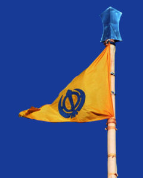

Nishan Sahib – Traditional Symbol of the Khalsa Panth
It is the sacred Sikh flag of Sikhism that is prominently displayed at every Gurudwara, representing the presence of the Guru and the Sikh community[cite: 5]. The Nishan Sahib is one of the most important and visible symbols of Sikh identity and faith[cite: 5].
Bearing the Khanda, it symbolizes Sikh identity, spiritual sovereignty, and the eternal presence of Guru Granth Sahib Ji[cite: 5]. Traditionally saffron or blue, the Nishan Sahib represents courage, sacrifice, unity, and selfless service[cite: 5].
It also serves as a beacon of hope, indicating that anyone—regardless of background—can find Langar, shelter, and support at the Gurudwara[cite: 5].
Significance of Nishan Sahib in a Gurudwara
1. Symbol of Sikh Identity
The Nishan Sahib bears the Khanda emblem and signifies the sovereignty, unity, and distinct identity of Sikhism[cite: 5]. Wherever it flies, it marks the place as a Gurudwara[cite: 5].
2. Spiritual Presence of the Guru
The flag represents the eternal presence of Guru Granth Sahib Ji[cite: 5]. It reminds Sikhs that the Gurudwara is a place of spiritual guidance, humility, and devotion[cite: 5].
3. Beacon of Hope and Help
Historically, the Nishan Sahib served as a sign of refuge and assistance[cite: 5]. Anyone in need—regardless of religion or background—could approach a place flying the Nishan Sahib for food (Langar), shelter, and support[cite: 5].
4. Color and Its Meaning
Traditionally, the Nishan Sahib is saffron (Basanti) or sometimes blue (Surmai)[cite: 5]:
- Saffron symbolizes sacrifice, courage, and service[cite: 5].
- Blue represents spiritual depth and warrior spirit[cite: 5].
There are three different items used in a Khanda, which also have a symbolic meaning: A double-edged sword called a Khanda in the centre, A Chakkar which is circular, Two single-edged swords, or kirpans, are crossed at the bottom and sit on either side of the Khanda and Chakkar[cite: 5]. They represent the two characteristics, one being Miri (Temporal power) and the other, Piri (Spirituality)[cite: 5]. In the symbol the sword to the left represents truth, and the sword to the right represents the willingness to fight for what is right – dharma (religion)[cite: 5]. The circle in the middle means that there is only one God, never beginning and never ending[cite: 5]. The Khanda represents knowledge of God, the Chakkar represents the eternal nature of God and oneness of humanity, the two swords represent Miri (political sovereignty) and Piri (spiritual sovereignty)[cite: 5].
5. Connection to Sikh History
The Nishan Sahib tradition dates back to the time of Guru Hargobind Sahib Ji and later strengthened during Guru Gobind Singh Ji’s era, symbolizing Miri-Piri (temporal and spiritual authority)[cite: 5].
6. Respect and Maryada (Protocol)
- The Nishan Sahib is always placed at the highest point of the Gurudwara[cite: 5].
- It is changed during special ceremonies, especially on Vaisakhi, in a respectful service called Seva of Nishan Sahib[cite: 5].
- The old cloth is carefully preserved or distributed respectfully[cite: 5].
7. Unity of the Sikh Panth
The Nishan Sahib stands for the collective strength and unity of the Sikh community (Panth), reminding Sikhs of their duty toward truth, justice, and selfless service (Seva)[cite: 5].
In Essence
The Nishan Sahib is not just a flag—it is a living symbol of Sikh values, spirituality, courage, equality, and service to humanity[cite: 5].